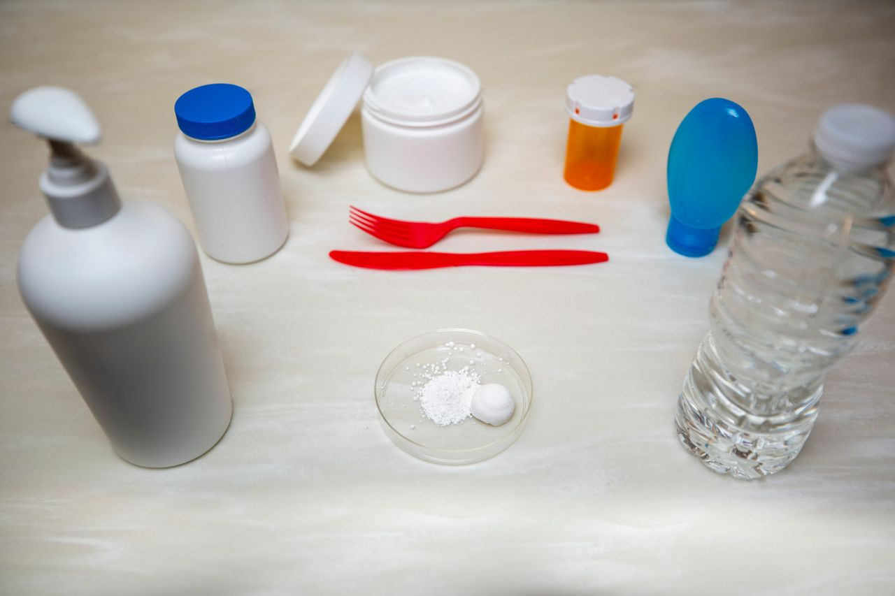
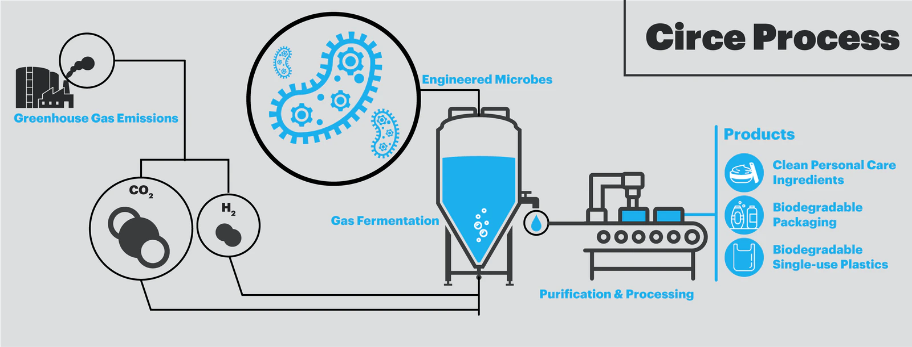

Microbi care au fost modificaţi pot produce plastic biodegradabil la un preţ mai mic şi fără un impact distructiv asupra mediului.
© Wyss Institute at Harvard University
Microbii din sistemul dezvoltat de Shannon Nangle şi Marika Ziesack preiau dioxidul de carbon şi hidrogenul rezultat din arderea combustibililor fosili şi le folosesc pentru a produce un fel de polimeri biodegradabili. Aceşti polimeri sunt purificaţi şi folosiţi pentru a produce o gamă largă de produse biodegradabile cu o amprentă asupra mediului mult redusă.
Desi este o invenţie de doar 100 de ani, deja există 8300 de milioane de tone metrice de plastic. Majoritatea formelor de plastic nu sunt biodegradabile şi astfel întreaga cantitate de plastic produsă se poate găsi în sistemul biologic planetar. Iar datorită proceselor mecanice de deteriorare a fibrelor de plastic, forme de microplastic pot fi întâlnite în aer şi în apa, cu efecte necunoscute asupra sănătăţii oamenilor.
Secretul versatilităţii plasticului se găseşte în polimerii de carbon. Aceste lanţuri de atomi de Carbon şi Hidrogen oferă respectivele proprietăţi plasticului.
Majoritatea bioplasticului este produs prin procesul de fermentare al celulozei şi zahărului pentru a produce etanol, care este rafinat în produse chimice necesare producţiei de bioplastic. Pentru a acoperi necesarul planetar de bioplastic un astfel de proces de producţie nu este sustenabil datorită vastelor suprafeţe de teren necesare.
Tocmai de aceea, microbii modificaţi pot reprezenta o alternativă în producţia de bioplastic. Aceştia sunt precum mici fabrici productive. Preiau sursa de hrană, extrag energie şi nutrienţi, eliminănd ceea ce nu au nevoie.
Astfel, prin modificarea metabolismului microbului "Cupriavidus necator", acesta preia Hidrogen si Dioxid de carbon iar în urma procesului de fermentare rezultă un polimer denumit PHA. Acesta din urmă este folosit pentru stocarea energiei de către microb.
© Wyss Institute at Harvard University
Polimerii rezultaţi sunt purificaţi iar forma rezultată sub formă de pudră este folosită pentru a produce produse biodegradabile.
Privind spre viitor, aceşti microbi modificaţi pot fi folosiţi chiar pentru a construi aşezări pe alte planete, folosind chimicale din atmosferă.